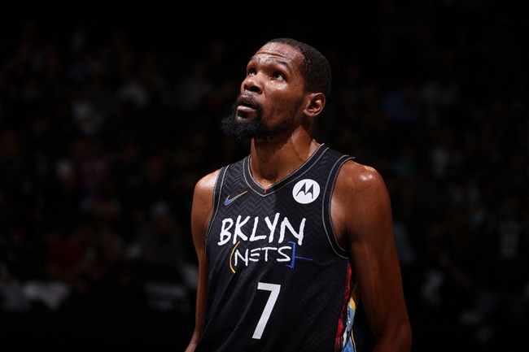
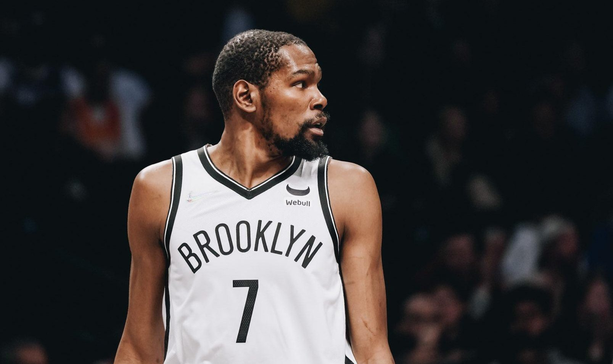

À medida que o pedido de troca do astro do Brooklyn Nets, Kevin Durant, se aproxima da quarta semana, o Boston Celtics surgiu entre as equipes envolvidas em negociações sobre um possível acordo.
Os Celtics não parecem estar mais perto de adquirir Durant do que outros em discussões com os Nets, mas a capacidade de Boston de incluir o ala-estrela Jaylen Brown como peça central nas ofertas ajuda a equipe em sua busca, disseram fontes.
Miami Heat, Phoenix Suns e Toronto Raptors são conhecidos por terem vários graus de interesse em Durant, mas o Celtics também tem mantido contato regular com o Nets, disseram fontes.
Não há acordos que possam ter tração para Durant, e nenhum time ainda atingiu o limite significativo que os Nets estabeleceram para trocar um dos jogadores mais talentosos da liga, disseram fontes. A postura dos Nets em uma negociação em potencial permaneceu praticamente inalterada: eles querem um retorno maciço que potencialmente inclui várias escolhas de primeira rodada, trocas de escolhas e jogadores impactantes para Durant, disseram fontes.
Os Celtics consideram Jayson Tatum fora dos cogitação em qualquer negociação comercial, mas Boston é capaz de construir um pacote para Durant que pode incluir Brown e até três escolhas de primeira rodada (2025, 2027 e 2029) - e duas trocas de escolha (2024 e 2026). Brown, 25, tem dois anos e US$ 56 milhões (R$ 308 milhões) restantes em seu contrato atual.
Durant, 12 vezes All-Star e duas vezes MVP das finais da NBA, pediu uma troca em 30 de junho e não recuou. Aos 33 anos, tem quatro anos e US$ 198 milhões (R$ 1 bilhão) restantes em seu contrato, o que significa que o Brooklyn pode ser paciente em esperar as equipes pelo tipo de retorno que acredita que eventualmente surgirá para um jogador estrela que atinge o mercado comercial em seu auge.
Os Celtics derrotaram os Nets por 4 a 0 em uma série de playoffs da Conferência Leste na temporada passada e construíram o núcleo de sua equipe atual, em parte, a partir da compensação do draft de uma troca de 2013 que enviou Kevin Garnett e Paul Pierce para os Nets. Tanto Tatum quanto Brown foram escolhas de draft e trocadas de Brooklyn para Boston.
 